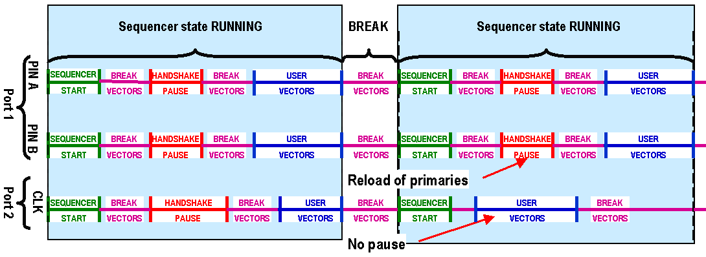
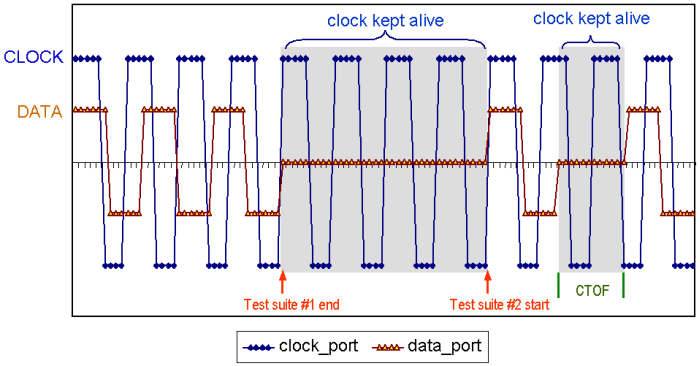

Continuous Clock Applications
For some tests, it is necessary to be able to keep a continuous clock signal applied to the DUT for the duration of several tests or testsuites.
The reason for this, is to keep the PLL or DLL in the DUT locked, so that the timing relationship between the DUT and the tester does not change between tests. If this is not possible non-deterministic results may occur.
A continuous clock setup could take one of the following two scenarios.
You do not need to change the data timing during a test
Here, you require a continuous clock signal for the whole testflow, for example, and you do not need to change the timing of the data port during execution of the testflow.
You can set this up conveniently using the ASCII Interface by using the KEEP_PLL_ALIVE feature in the ASCII Device Cycle Timing Source (dvc) file to configure a certain type of multi-port specification for the clock port and the data ports automatically (see the section, dvc File Support of the Continuous Clock (page 137).
In this case, the clock and vector pins will automatically be put into different timing ports but they will continue to share the same vector port.
Note: Because the vector port is shared, it is not possible to change the timing of the data pins within an individual test without interrupting the clock. It is, however, possible to change the data timing from one testsuite to another within a testflow and still retain the continuous clock.
You do need to change the data timing during a test
In this case, you need a multi-port setup because you cannot use the KEEP_PLL_ALIVE option in the ASCII Device Cycle Timing Source (dvc) file as you need separate timing and vector ports for the clock and data pins.
Normally, when a change of the timing and level primary sets is reloaded, a CTOF (Change Timing On the Fly) sequence is applied. During a CTOF sequence the driver is set to "hold" for a certain period of time. This interrupts the clock and data signals.
Multi-port settings, however, allow the continuous operation of multiple PLLs at their associated frequencies through the definition of separate ports for the clock and data signals.
A simple multi-port setup allows you to change the primary set in the data pins only, while not interrupting the clock signal by using different ports for data and clock.
This is illustrated in the following figure

This way you can keep the clock running when stepping from test suite to test suite. This also reduces test time related to reset and re-synch operation, often required in multiple clock domain devices.

Furthermore, phase and sequencer synchronization capabilities across multiple clock domains allow uninterrupted clock operation and alignment to data buses when required (see Phase Synchronization).
For synchronisation of user vectors of ports that belong to different sequencing groups, SmarTest features two firmware commands, SQRP and SQBV.
- SQRP specifies the so-called reference port for SQBV. This is the port on which primary activation takes place.
- SQBV issues a specific number of break vectors on a port at the beginning of each label. The actual offset to be compensated for depends on the type of primary activation taking place and other boundary conditions such as the periods of the ports and the number of ports.
Primary activation is automatically optimized on all ports, which means that primaries are only activated if the requested primaries are not active yet on the particular ports.
For more information on this see SQBV, SQBV? - (SeQuencer Break Vector insertion) and the application note "RX-TX Port Alignment on SmarTest 5.3".
The next section (Continuous Clock Setup) explains setting this up in more detail.
Functional changes
- Introduced before SmarTest 6.3.2